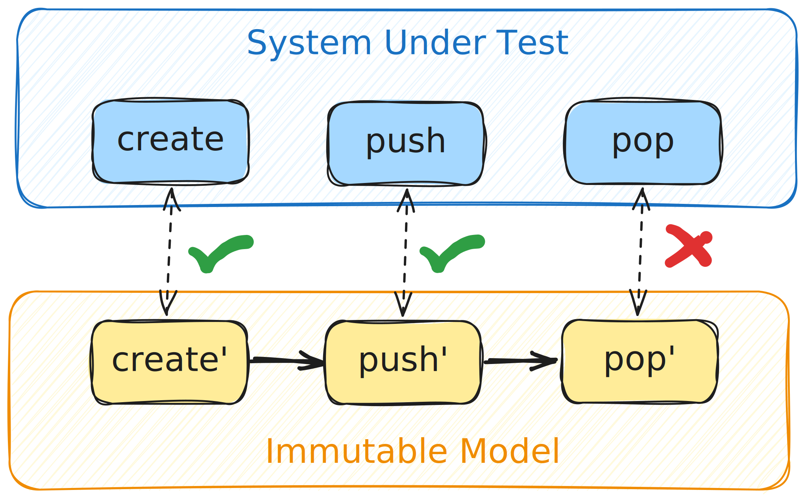

Dynamic Verification of OCaml Software
Nikolaus Huber
About me
About me
About me
About me
About me
About me

Dynamic Verification of OCaml Software with Gospel and Ortac/QCheck-STM


Artifact:

- Functional core
- Many imperative features
- References
- Mutable arrays
- I/O
- Exceptions

Infer
Astrée
...
Gospel
- Behavioural specification language
- Type invariants, function pre/post conditions, mutability, exceptions, ...
- Tool agnostic
- Cameleer
- Why3gospel
- ORTAC
- ...
GOSPEL—Providing OCaml with a Formal Specification Language.
Charguéraud, A., Filliâtre, JC., Lourenço, C., Pereira, M.
Symposium on Formal Methods (FM) 2019
https://doi.org/10.1007/978-3-030-30942-8_29
Charguéraud, A., Filliâtre, JC., Lourenço, C., Pereira, M.
Symposium on Formal Methods (FM) 2019
https://doi.org/10.1007/978-3-030-30942-8_29
ORTAC
- (O)Caml (R)un(T)ime (A)ssertion (C)hecker
- Module I/F + GOSPEL => code for testing
- Plugins
- Wrapper
- Monolith
- QCheck-STM
- ...
QCheck-STM
- QCheck + state
- black-box, model-based state-machine testing

Stack (Excerpt)
type 'a t
exception Empty
val create : unit -> 'a t
val push : 'a -> 'a t -> unit
val pop : 'a t -> 'a
val is_empty : 'a t -> bool
type 'a t
(*@ mutable model contents : 'a sequence *)
val create : unit -> 'a t
(*@ t = create ()
ensures t.contents = Sequence.empty *)
val push : 'a -> 'a t -> unit
(*@ push v t
modifies t.contents
ensures t.contents =
Sequence.cons v (old t.contents) *)
val is_empty : 'a t -> bool
(*@ b = is_empty t
ensures b = match Sequence.length t.contents with
| 0 -> true
| _ -> false *)
Configuration module
type sut = char Stack.t
let init_sut = Stack.create ()
Running Ortac/QCheck-STM
ortac qcheck-stm stack.mli stack_config.ml
- Generates code for RAC
- Needs a few additional libraries to link
- dune plugin available
- Can be easily integrated into CI
val copy : 'a t -> 'a t
(*@ r = copy t
ensures r.contents = t.contents *)
val transfer : 'a t -> 'a t -> unit
(*@ transfer t1 t2
modifies t1.contents
modifies t2.contents
ensures t1.contents = Sequence.empty
ensures t2.contents =
(old t1.contents) ++ (old t2.contents) *)
Evaluation - Errors/Bugs found
Hashtbl
val create : ?random:bool -> int -> ('a, 'b) t
(** [Hashtbl.create n] creates a new empty hash table with
initial size [n]. For best results, [n] should be on the
order of the expected number of elements that will be in
the table. The table grows as needed, so [n] is just an
initial guess. ... *)
type ('a, 'b) t
(*@ mutable model contents : ('a * 'b) list *)
val create : ?random:bool -> int -> ('a, 'b) t
(*@ h = create ?random size
checks size >= 0
ensures h.contents = [] *)
Gospel specification violation in function create
File "hashtbl.mli", line 7, characters 11-20:
size >= 0
when executing the following sequence of operations:
[@@@ocaml.warning "-8"]
open Hashtbl
let protect f = try Ok (f ()) with e -> Error e
let sut0 = create ~random:false 16
let r = protect (fun () -> create ~random:true (-8))
assert (match r with
| Error (Invalid_argument _) -> true
| _ -> false)
(* returned Ok () *)
Errors found
- Documentation fix
- Hashtbl.create (initial size guess can be negative)
- 2 bugs in Varray library
- 7 bugs in Bitv library
- 3 functions with possible integer overflow
- 2 functions with possible division-by-zero
- 2 functions throwing unexpected exceptions
- ...
Thank you for listening!
Questions?
https://github.com/ocaml-gospel/ortac/
This work was partially funded by ANR grant ANR-22-CE48-0013 and Tarides.